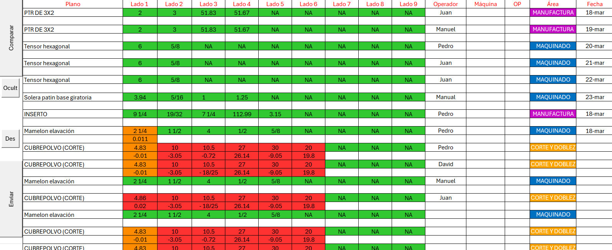
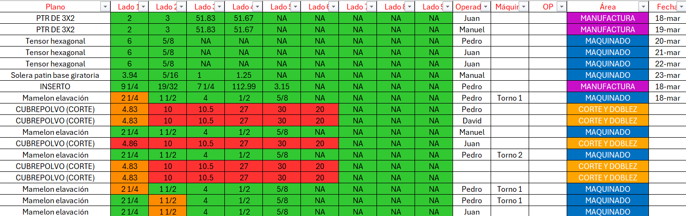
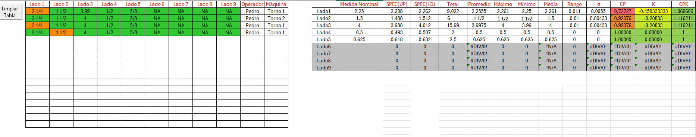
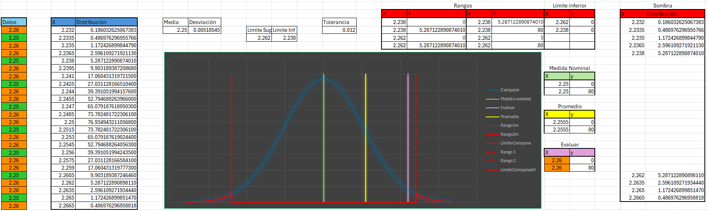

Descripción del Proyecto
Esta herramienta fue desarrollada en Microsoft Excel utilizando macros en VBA, con el objetivo de automatizar y simplificar el proceso de inspección de calidad en una empresa de manufactura.
El archivo Excel está organizado en diferentes hojas con funcionalidades específicas:
- Registro: Captura de medidas de hasta 9 lados por pieza. Se ingresan datos como operador, máquina, orden de producción y la fecha. El sistema valida automáticamente contra especificaciones y colorea los resultados: verde (OK), amarillo (en tolerancia), rojo (fuera de rango). También calcula la desviación exacta por lado.
- Tabla: Consolida los registros y permite filtrar por operador, pieza, fecha, etc. A partir de estos filtros, se generan cálculos estadísticos como: promedio, rango, media, desviación estándar, CP, CPK, etc.
- Campana: Contiene una gráfica de tipo Gauss (campana de distribución) ajustada a los datos filtrados, útil para análisis visual de la dispersión de medidas.
- Hojas de departamentos: Cada una contiene las especificaciones de piezas para diferentes áreas. Aquí se hace la validación automática con los datos de la hoja de registro.
Este proyecto ha sido implementado exitosamente para mejorar el monitoreo de calidad y generar indicadores clave a partir de registros reales.
Galería



